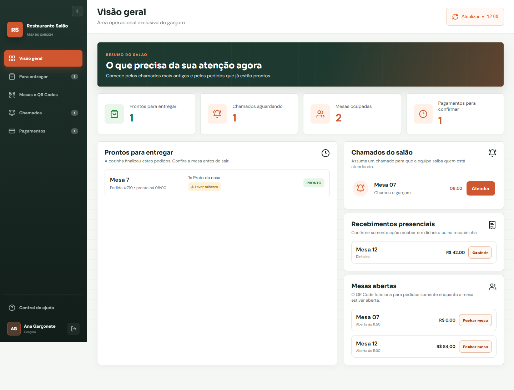
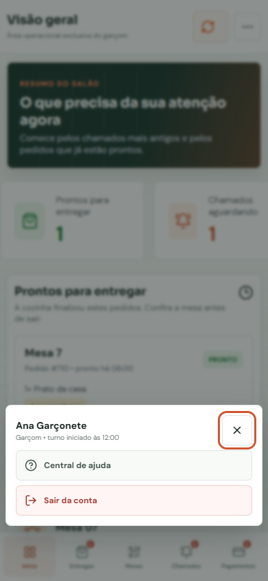
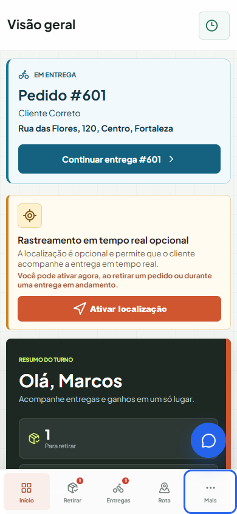
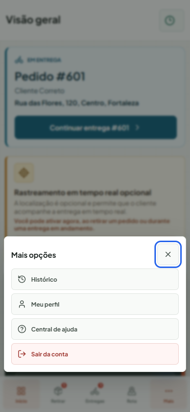
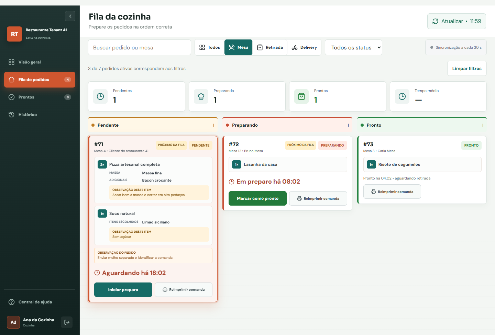
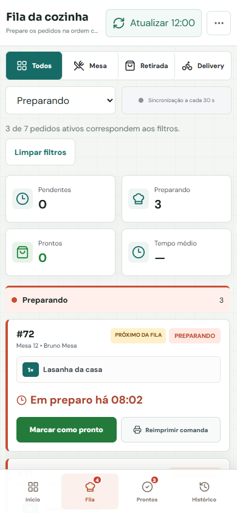
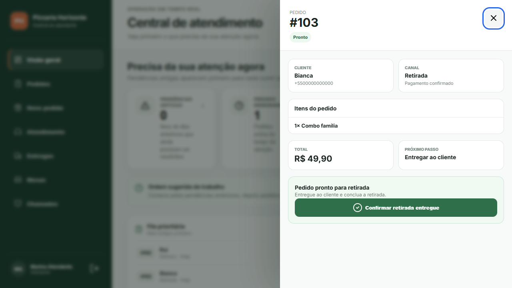
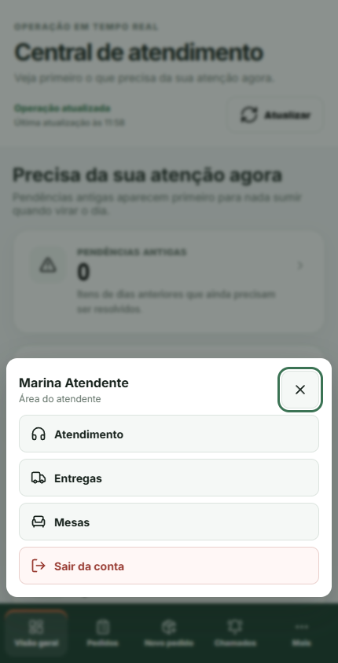

Melhorias nos fluxos de garçom, motoqueiro, cozinha e atendente, preservando a identidade visual do projeto.
Capturas da interface real executada no Chrome, com dados de teste. Clique em uma imagem para abrir em tamanho completo.
Garçom
Busca por 07 ou Mesa 07, limpeza de filtros, aviso de atualização incompleta e menu móvel com foco controlado.
Como achar a comanda pelo número que está na mesa.


Motoqueiro
Cliente e destino em destaque, atalho para continuar a entrega, ligação direta e estados claros de carregamento ou falha.
A entrega que já está na mochila fica no começo da bancada.


Cozinha
Contagem e limpeza de filtros, espaço para o status selecionado e confirmação mesmo quando a comanda sai daquela coluna.
Mover a comanda e receber a confirmação do colega.


Atendente
Pedidos prioritários clicáveis, recuperação dos detalhes com erro e navegação móvel com Mais e saída da conta.
O quadro de pendências vira uma bancada de trabalho.

